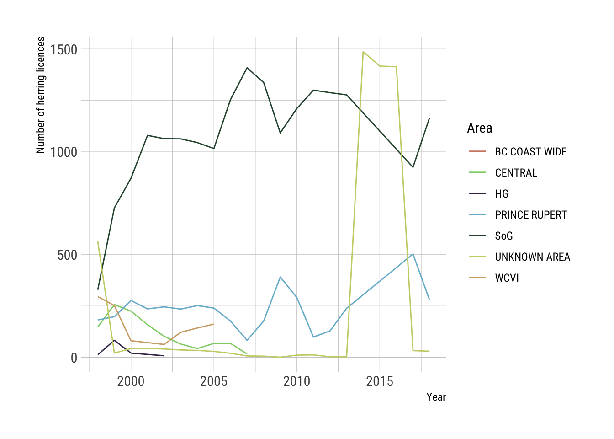
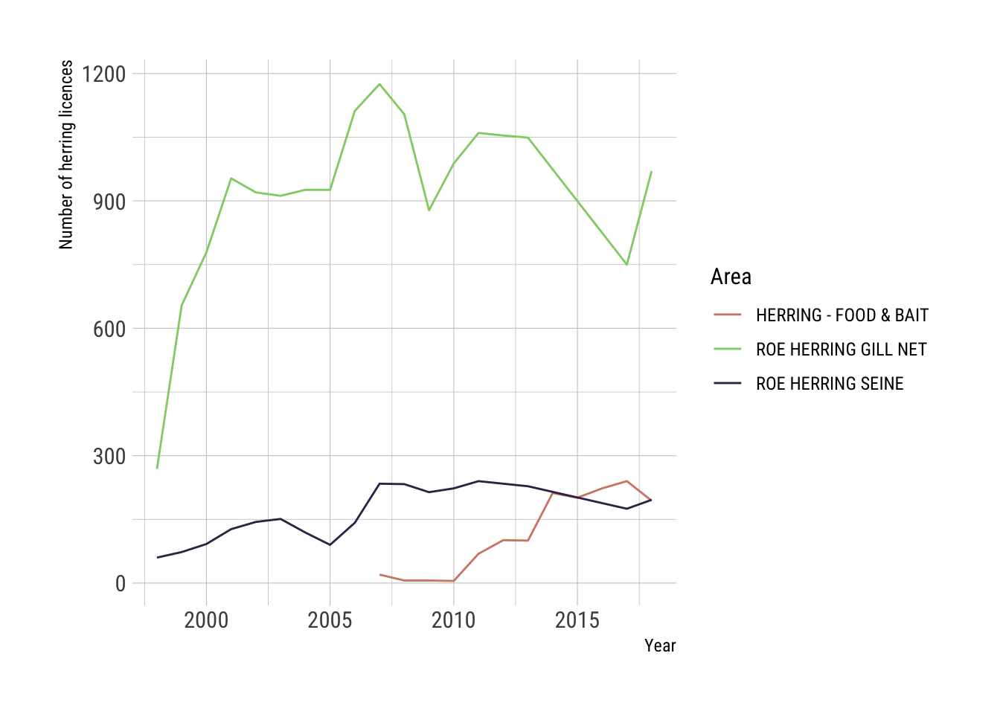

7 Ownership and Licenses
The roe herring fishery is managed by a limited entry licence program. The total allowable catch (TAC) is set at the beginning of the season based on DFO stock assessments. Before the season the licences must be pooled into self-selected groups for ease of management where the gillnet pools must have a minimum of 4 licences per pool, and the seine fishery must have eight licences per pool but no more than 10 pools permitted in the Strait of Georgia (Fisheries and Oceans Canada 2018). The TAC is then divided based on the number of licences in each pool. A seine roe licence can elect to fish instead in the Food and Bait fishery and then the amount of catch they would have caught in the roe fishery is switched to allow them to fish in the Food and Bait fishery.
While the number of roe herring seine licenses is relatively constant, this does not have a strong relationship to the number of vessels actually fishing. Most vessels that fish have two licenses stacked on their vessel. In 2007, only 38 seine vessels registered landings, while the total fleet of 133 vessels owned 248 licenses (Nelson 2009). The number of active fishing vessels in the seine fishery increased to 43 active vessels in 2009 (Nelson 2011).
Figure 7.1: Total herring licenses by fishery type
The trend in licences by area should be interpreted with caution as the field is blank for many of the entries in the commercial licence database. However, there does appear to be movement of licences to the remaining fishing areas as would be expected as some of the main fishing areas have been closed for several years (Figure ??). This trend is apparent for the Strait of Georgia as well since 2000 (Figure ??).


| Company | 2018 Herring roe licences |
|---|---|
| Jim Pattison Group | 228 |
| Aero Trading Co. Ltd. | 34 |
| Arctic Pearl Ice And Cold Storage Ltd. | 28 |
| Robert Recalma | 28 |
| A-Tlegay Fisheries Society | 25 |
| James Walkus | 25 |
| Salish Seas Fisheries Association | 24 |
| Randy Reifel | 23 |
| Gwabalis Fisheries Society | 18 |
| Corrine Rockl | 16 |
| Other | 1026 |
The largest owner(s) of herring roe licences are the companies belonging to the Jim Pattison Group (Table 7.1). This concentration in this firm has grown over time and now represents 15% of total roe licences. Of these, the Pattison group is more heavily invested in the seine licences which are worth more and account for more landings in the roe fisheries (Figure 7.2). Therefore, the Pattison Group’s expected quota for 2019 in the Strait of Georgia is 3,823 out of the total 19,498 metric tonnes (19.6%). Outside of those owned by the Jim Pattison Group, there is significant concentration in the top 10 largest herring licence holders.
Figure 7.2: Herring licences owned by the Jim Pattison Group
A standard measure of inequality is the Gini index. The Gini index is a value between 0 and 1, where 1 represents perfect inequality and 0 represents perfect equality. This measure has been applied to fishing licences and fleets to measure equity. It was applied to the BC salmon and herring fisheries and found a large share of corporate control. As corporate control has become a concern for BC, here we investigate the change in inequality in the fishery over time. There has been a significant increase in the inequality of the herring licence division over time occurring in both the seine and gillnet roe fisheries (Figure 7.3).

Figure 7.3: Gini coefficient for roe herring licences
The value of roe herring licences for both the gillnet and seine have declined substantially since high levels in the late 1990s and early 2000s. The outright licence fees are so much lower that the lease value of these licences has dropped to near zero. By industry accounts, there is very little leasing of licences in the gillnet fishery and almost none in the seine fishery.
Figure 7.4: Herring licence values by fishery type and fee